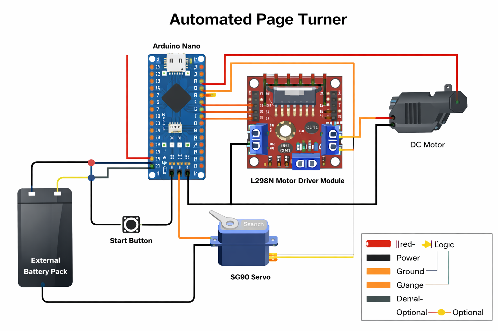

Automated Page Turner
Assistive embedded system prototype designed to turn book pages through controlled motor actuation, mechanical grip, and iterative physical testing.


Project Overview
The Automated Page Turner is an assistive embedded systems project developed to explore motorized page turning for books or printed material. The system was designed to use embedded control, motor actuation, and a custom mechanical contact point to initiate page movement automatically.
The core challenge was not simply moving a motor, but creating a repeatable mechanism that could grip and move a single page without pulling multiple pages, slipping, or damaging the paper. This required combining electronics, software timing, mechanical design, and real-world testing into one working prototype.
The project progressed from concept into a physical prototype, with testing used to evaluate what worked, what failed, and what needed to be improved in future mechanical revisions.
Project Specs
This project included embedded controller setup, motor actuation, mechanical prototyping, CAD design, physical assembly, testing, troubleshooting, and documentation of performance limitations.
Engineering Challenges
The largest engineering challenge was reliably turning one page at a time. Paper is flexible, thin, and inconsistent, which made the mechanism harder than a basic motorized movement system. The design needed enough grip to move the page, but not so much force that it grabbed multiple pages or damaged the material.
Another challenge was mechanical consistency. Small changes in pressure, wheel angle, page position, and surface friction affected whether the system could successfully initiate a page turn. Because of this, testing focused heavily on grip behavior, contact alignment, and repeatability.
- Creating enough friction to move a page without tearing or bunching it
- Preventing the mechanism from grabbing multiple pages at once
- Aligning the motor and wheel for consistent contact pressure
- Balancing motor speed, timing, and mechanical force
- Keeping the prototype compact enough to work near a real book
- Testing inconsistent page behavior under real physical conditions
System Design
The Automated Page Turner was designed around an ESP32-based control system connected to a motor-driven mechanical page-turning mechanism. The motor applied rotational movement through a contact wheel intended to grip the page surface and start the turning motion.
The mechanical design focused on controlled contact between the wheel and page. A rubber wheel was used to increase friction against the paper, while the motor mount and support structure were designed to position the actuator close enough to engage the page consistently.
The system combined embedded control with mechanical design so the timing and movement of the motor could be tested against the physical behavior of the page.
- ESP32 microcontroller used for embedded control
- N20 gear motor used for compact motorized actuation
- Rubber wheel used to increase friction against the page surface
- Custom mechanical structure used to position the actuator
- Motor timing and activation used to control page movement
- Physical testing used to evaluate grip and page separation behavior
Testing & Iteration
Testing showed that the prototype could initiate page movement, which validated the core concept of using a motorized contact wheel to assist with page turning. The test video documents the mechanism attempting to move the page and shows the project operating as a physical prototype.
The biggest limitation discovered during testing was consistency. The system could begin moving a page, but reliable full page turning was difficult because grip, page separation, and contact pressure varied between attempts.
These results were important because they identified the real mechanical issues that needed to be solved in later revisions. Instead of treating the prototype as a finished product, testing helped define the next engineering steps.
- Verified that the motorized mechanism could initiate page movement
- Identified grip consistency as a major reliability issue
- Observed page separation problems during real testing
- Evaluated wheel contact pressure and alignment
- Used prototype behavior to guide future mechanical redesigns
Results & Findings
The Automated Page Turner successfully demonstrated the core concept of using embedded motor control to assist with page turning. The prototype was able to initiate page movement and provided direct evidence of how the mechanism behaved in a real physical test.
The project also revealed that the most difficult part of the problem was not electronics or motor control, but repeatable mechanical interaction with paper. Grip consistency, pressure control, and page separation became the most important findings from the testing process.
Overall, the project demonstrates embedded system design, mechanical prototyping, actuator integration, and iterative problem solving through a real assistive automation use case.
Future Improvements
Future versions of the Automated Page Turner would focus on improving mechanical reliability and making the system more consistent across different book sizes, paper types, and page positions.
- Add an adjustable spring-loaded arm to control contact pressure more consistently
- Improve the wheel angle and contact surface for better single-page grip
- Add a guide or separator to reduce the chance of grabbing multiple pages
- Test multiple wheel materials to improve friction without damaging paper
- Add button or wireless activation for easier user control
- Refine the mechanical frame to support different book sizes
- Add sensing or feedback to detect whether a page successfully moved
Technologies Used
Project Links
Demo Video: Watch Page Turner Test
GitHub Repository: View Source Code
The demo video shows the prototype attempting to turn a page using motor-driven movement. Testing confirmed that the system could initiate page motion, while also revealing key limitations with grip consistency, page separation, and repeatability.
Key Contributions
- Designed the motor-driven page turning concept and mechanical layout
- Integrated ESP32-based embedded control with motor actuation
- Built and tested a physical assistive device prototype
- Evaluated grip, contact pressure, and page separation behavior
- Documented system limitations and future improvement paths
- Used testing results to guide iterative mechanical redesign decisions